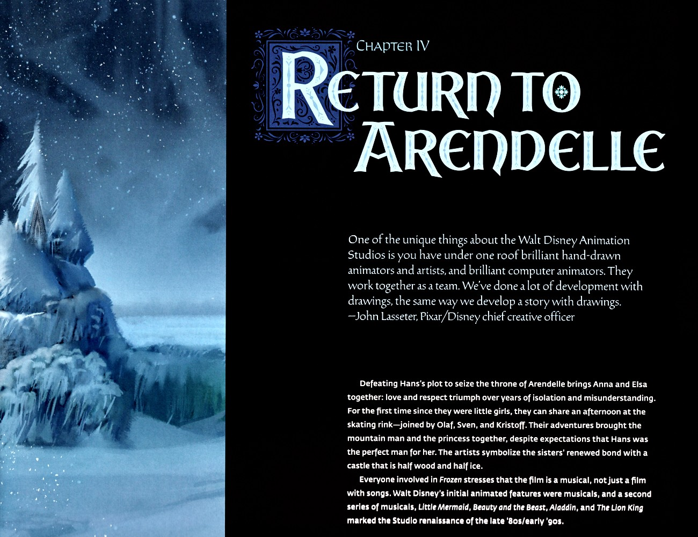
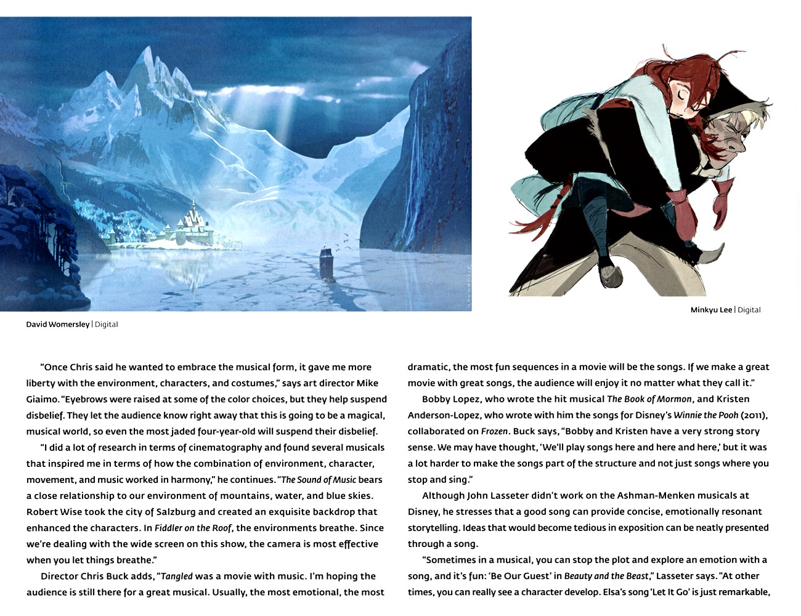
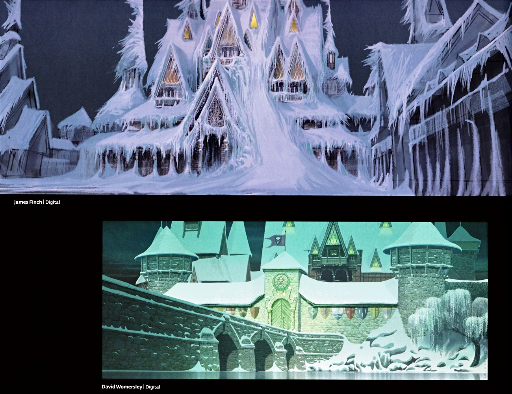
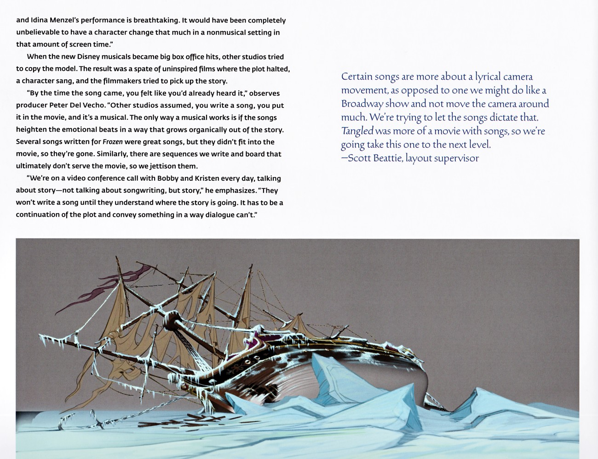
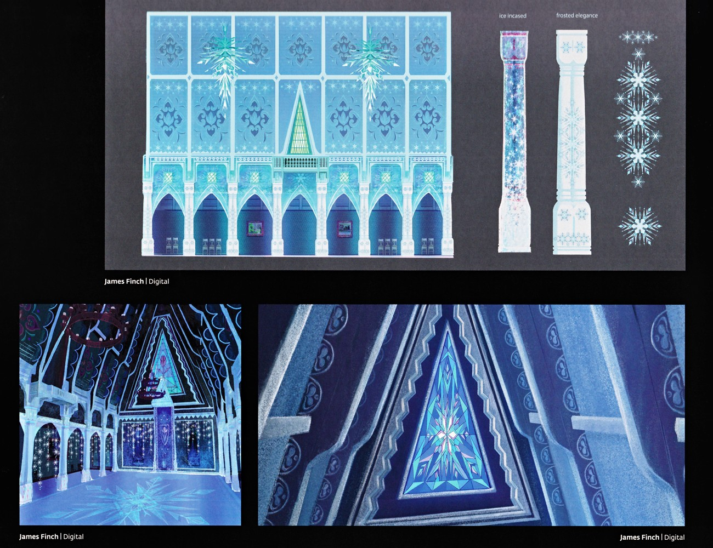
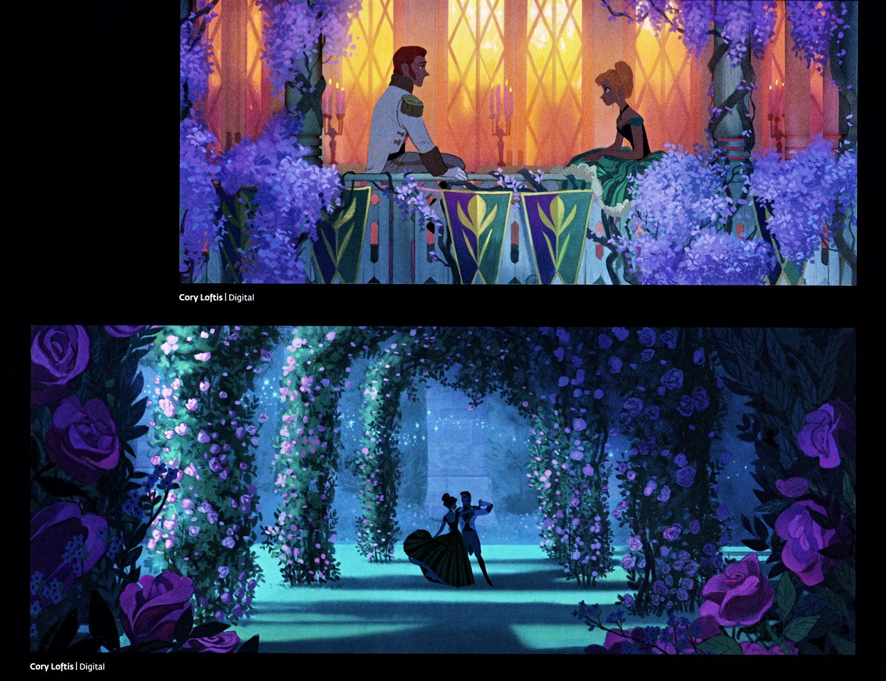

📖 设定集 · F1设定集
F1 图版 · 第四章 重返阿伦黛尔
F1 官方设定集图版 · p138–p153
5
本卷页数
🎨
设定集
中/英
双语
🖼️ F1 官方设定集 · 原书图版
F1 图版 · 第四章 重返阿伦黛尔
《The Art of Frozen》（Charles Solomon, Chronicle Books 2013） p138–p153
8
图版
p138–p153
原书页码
原书
扫描原图
笔记
逐页图注
🏰 从阿伦黛尔被冰雪封冻的夜景到重返阿伦黛尔、真爱解冻与结局，直至书末的致谢与出版页——《The Art of Frozen》旅程的收尾。
🌤️ 第四章 Back in Arendelle · 至书末（p138–p153）

第四章 重返阿伦黛尔
本页开启第四章"重返阿伦黛尔"。John Lasseter 强调迪士尼动画工作室独特之处在于手绘与电脑动画师同处一室、以图画协作开发故事。正文概述：挫败 Hans 篡位图谋使 Anna 与 Elsa 重聚，爱与尊重战胜多年隔阂；姐妹自童年后再度共度溜冰午后，并有 Olaf、Sven、Kristoff 相伴，艺术家以"半（F1设定集原页）

冰冻峡湾与暴风雪
本页上方两幅环境/故事草图：David Womersley 的孤身渡越冰冻峡湾宽景（冰崖夹峙、云隙柔光），与 Minkyu Lee 的暴风雪中 Kristoff 背负 Anna 的故事板。正文为创作访谈：美术指导 Mike Giaimo 称一旦 Chris 决定采用音乐剧形式，他在环境、角色、服装上获得更大自由，部分大（F1设定集原页）

阿伦黛尔港口雪封航拍
本页为纯图页：从空中俯瞰阿伦黛尔港口小镇被厚雪覆盖，彩色屋顶与一艘冻结在冰面水域中的高桅帆船构成画面。以饱和屋顶色点缀于一片雪白之上，体现 Giaimo 所言"大胆配色帮助暂缓怀疑"的音乐世界基调。（F1设定集原页）

阿伦黛尔城堡雪封与大门
本页两幅城堡环境概念图：James Finch 以低仰角戏剧化呈现阿伦黛尔城堡被雪与冰柱彻底吞没，木质建筑化为冰封尖塔；David Womersley 画出绿调冬空下城堡大门与石桥正面，入口上方悬挂旗帜与盾徽。两者共同确立重返阿伦黛尔时"半木半冰"的城堡视觉。（F1设定集原页）

音乐剧创作理念与冻结帆船
本页探讨音乐剧创作方法论：制片人 Peter Del Vecho 指出其他工作室误以为"写首歌放进去就是音乐剧"，而真正有效的音乐剧是歌曲以有机方式从故事中生长、强化情感节拍；为《冰雪奇缘》写的多首好歌因不合影片被舍弃，诸多故事板段落亦被弃用。词曲作者 Bobby 与 Kristen 每日参与故事会议，须先理解故事走向（F1设定集原页）

冰雪宫殿内景概念图
上图为冰雪宫殿内景设计，含拱形窗、装饰性雪花纹样，以及两种柱式标注 "Ice Incased"（冰封包裹）与 "frosted elegance"（冰霜雅致）。下图为王座厅：一帧是闪烁蓝色大厅的宽景，另一帧是中央带雪花的三角形彩色玻璃窗特写。均由 James Finch 以数字绘画完成，呈现艾莎冰宫的晶莹与对称美学。（F1设定集原页）

安娜与汉斯恋曲场景概念图（二）
两幅由 Cory Loftis 创作的数字概念图：其一为安娜与汉斯坐于缀满鲜花、沐浴暖橙与紫罗兰光线的阳台；其二为二人在覆满紫玫瑰与发光仙灯的繁茂花园凉亭下起舞。共同烘托恋曲段落的梦幻暖色调与童话花园意象。（F1设定集原页）

安娜与汉斯阳台相偎概念图与 Ranjo 引言
画面中安娜与汉斯隔着石栏在花藤与白鸽、柔和粉光中彼此倾身靠近，是恋曲段落的亲密构图。Jeff Ranjo 的引言指出迪士尼最擅长音乐剧，久未推出歌唱音乐剧，此刻正该回归；在迪士尼世界里观众更易接受角色歌唱，这种"人造感"反而成为观众的期待。（F1设定集原页）
💡 图注说明
本页全部图版为《The Art of Frozen》（Charles Solomon, Chronicle Books 2013）原书扫描（原图复制，未压缩），图注（中文标题 + 要点首句）逐页取自官方设定集中文笔记，点击图片可查看原尺寸扫描。
📌 本页要点
你正在阅读《设定集》卷的「F1 图版 · 第四章 重返阿伦黛尔」。本页由电影正典、官方设定集与官方小说综合梳理，可作为该主题的速查入口；右侧目录可快速跳转到本页各小节。